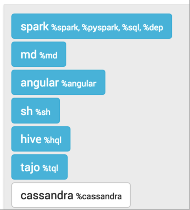
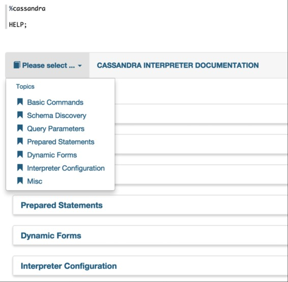
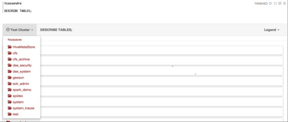

Cassandra CQL 解释器
原文链接 : http://zeppelin.apache.org/docs/0.7.2/interpreter/cassandra.html
译文链接 : http://www.apache.wiki/pages/viewpage.action?pageId=10030777
| Name | Class | Description |
|---|---|---|
| %cassandra | CassandraInterpreter | 为Apache Cassandra CQL查询语言提供解释器 |
启用Cassandra解释器
在笔记本中，要启用Cassandra解释器，请单击Gear图标并选择Cassandra。

使用Cassandra解释器
在段落中，使用％cassandra来选择Cassandra解释器，然后输入所有命令。
要访问交互式帮助，请键入HELP;

解释器命令
所述Cassandra解释器接受下列命令
| Command Type | Command Name | Description |
|---|---|---|
| Help command | HELP | 显示交互式帮助菜单 |
| Schema commands | DESCRIBE KEYSPACE, DESCRIBE CLUSTER, DESCRIBE TABLES ... | 描述Cassandra模式的自定义命令 |
| Option commands | @consistency, @retryPolicy, @fetchSize ... | 将运行时选项注入段落中的所有语句 |
| Prepared statement commands | @prepare, @bind, @remove_prepared | 让您注册一个准备好的命令，并通过注入绑定值重新使用它 |
| Native CQL statements | All CQL-compatible statements (SELECT, INSERT, CREATE ...) | 所有CQL语句都直接针对Cassandra服务器执行 |
CQL语句
该解释器与Cassandra支持的任何CQL语句兼容。例如：
INSERT INTO users(login,name) VALUES('jdoe','John DOE');
SELECT * FROM users WHERE login='jdoe';
除了以下特殊命令之外，每个语句都应以分号（;）分隔：
- @准备
- @bind
- @remove_prepare
- @一致性
- @serialConsistency
- @timestamp
- @retryPolicy
- @fetchSize
- @请求超时
只要它们以分号分隔，就支持多行语句以及同一行上的多个语句。例如：
USE spark_demo;
SELECT * FROM albums_by_country LIMIT 1; SELECT * FROM countries LIMIT 1;
SELECT *
FROM artists
WHERE login='jlennon';
支持批处理语句，可以跨多行，以及DDL（CREATE / ALTER / DROP）语句：
BEGIN BATCH
INSERT INTO users(login,name) VALUES('jdoe','John DOE');
INSERT INTO users_preferences(login,account_type) VALUES('jdoe','BASIC');
APPLY BATCH;
CREATE TABLE IF NOT EXISTS test(
key int PRIMARY KEY,
value text
);
CQL语句不区分大小写（列名和值除外）。这意味着以下语句是等同和有效的：
INSERT INTO users(login,name) VALUES('jdoe','John DOE');
Insert into users(login,name) vAlues('hsue','Helen SUE');
所有CQL语句和版本的完整列表如下：
声明中的评论
可以在语句之间添加注释。单行注释以哈希符号（＃）或双斜杠（//）开头。多行注释在/ 和 /之间。例如：
#Single line comment style 1
INSERT INTO users(login,name) VALUES('jdoe','John DOE');
//Single line comment style 2
/**
Multi line
comments
**/
Insert into users(login,name) vAlues('hsue','Helen SUE');
语法验证
解释器随附了一个内置的语法验证器。此验证器仅检查基本语法错误。
所有与CQL相关的语法验证都直接委托给Cassandra
大多数情况下，语法错误是由于语句或打字错误之间的分号丢失造成的。
模式命令
为了使模式发现更容易和更具交互性，支持以下命令：
| 命令 | 描述 |
|---|---|
| DESCRIBE CLUSTER; | 显示当前的群集名称及其分区 |
| DESCRIBE KEYSPACES; | 列出集群中的所有现有密钥空间及其配置（复制因子，持久写入...） |
| DESCRIBE TABLES; | 列出集群中的所有现有密钥空间，并列出所有表的名称 |
| DESCRIBE TYPES; | 列出集群中的所有现有密钥空间，并列出所有用户定义的类型名称 |
| DESCRIBE FUNCTIONS; | 列出集群中的所有现有键空间，并列出所有函数的名称 |
| DESCRIBE AGGREGATES; | 列出集群中的所有现有密钥空间，并列出所有聚合名称 |
| DESCRIBE MATERIALIZED VIEWS; | 列出集群中的所有现有密钥空间，并列出所有实例化视图名称 |
| DESCRIBE KEYSPACE <keyspace_name>;_ | 描述给定的密钥空间配置及其所有表的详细信息（名称，列，...） |
| DESCRIBE TABLE (<keyspacename>).<table_name>;_ | 描述给定的表。如果没有提供密钥空间，则使用当前登录的密钥空间。如果没有登录密钥空间，则使用默认系统密钥空间。如果没有找到表，会出现错误信息 |
| DESCRIBE TYPE (<keyspacename>).<type_name>;_ | 描述给定类型（UDT）。如果没有提供密钥空间，则使用当前登录的密钥空间。如果没有登录密钥空间，则使用默认系统密钥空间。如果没有找到类型，会出现错误信息 |
| DESCRIBE FUNCTION (<keyspacename>).<function_name>;_ | 描述给定的功能。如果没有提供密钥空间，则使用当前登录的密钥空间。如果没有登录密钥空间，则使用默认系统密钥空间。如果没有找到功能，则会出现错误信息 |
| DESCRIBE AGGREGATE (<keyspacename>).<aggregate_name>;_ | 描述给定的聚合。如果没有提供密钥空间，则使用当前登录的密钥空间。如果没有登录密钥空间，则使用默认系统密钥空间。如果没有找到聚合，则会出现错误消息 |
| DESCRIBE MATERIALIZED VIEW (<keyspacename>).<view_name>; | 描述给定的视图。如果没有提供密钥空间，则使用当前登录的密钥空间。如果没有登录密钥空间，则使用默认系统密钥空间。如果没有找到任何视图，会出现错误信息 |
模式对象（集群，密钥空间，表，类型，功能和聚合）以表格格式显示。左上角有一个下拉菜单来展开对象细节。右上角的菜单显示“图标”图标。

运行时参数
有时您希望能够将运行时查询参数传递给您的语句。
这些参数不是CQL规范的一部分，而是特定于解释器。
以下是所有参数的列表：
| 参数 | 语法 | 描述 |
|---|---|---|
| Consistency Level | @consistency=value | 将给定的一致性级别应用于段落中的所有查询 |
| Serial Consistency Level | @serialConsistency=value | 将给定的串行一致性级别应用于段落中的所有查询 |
| Timestamp | @timestamp=long value | 将给定的时间戳应用于段落中的所有查询。请注意，直接在CQL语句中传递的时间戳值将覆盖此值 |
| Retry Policy | @retryPolicy=value | 将给定的重试策略应用于段落中的所有查询 |
| Fetch Size | @fetchSize=integer value | 将给定的提取大小应用于段落中的所有查询 |
| Request Time Out | @requestTimeOut=integer value | 将给定的请求超时以毫秒为单位应用于段落中的所有查询 |
一些参数仅接受限制值：
| 参数 | 可能的值 |
|---|---|
| Consistency Level | ALL, ANY, ONE, TWO, THREE, QUORUM, LOCAL_ONE, LOCAL_QUORUM, EACH_QUORUM_ |
| Serial Consistency Level | SERIAL, LOCALSERIAL |
| Timestamp | Any long value |
| Retry Policy | DEFAULT, DOWNGRADING_CONSISTENCY, FALLTHROUGH, LOGGING_DEFAULT, LOGGING_DOWNGRADING, LOGGING_FALLTHROUGH |
| Fetch Size | Any integer value |
请注意，您应该不加分号（;在每个参数语句的结束）
一些例子：
CREATE TABLE IF NOT EXISTS spark_demo.ts(
key int PRIMARY KEY,
value text
);
TRUNCATE spark_demo.ts;
// Timestamp in the past
@timestamp=10
// Force timestamp directly in the first insert
INSERT INTO spark_demo.ts(key,value) VALUES(1,'first insert') USING TIMESTAMP 100;
// Select some data to make the clock turn
SELECT * FROM spark_demo.albums LIMIT 100;
// Now insert using the timestamp parameter set at the beginning(10)
INSERT INTO spark_demo.ts(key,value) VALUES(1,'second insert');
// Check for the result. You should see 'first insert'
SELECT value FROM spark_demo.ts WHERE key=1;
有关查询参数的一些注释：
- 许多查询参数可以在同一段落中设置
- 如果相同的查询参数用不同的值设置很多时间，则解释器仅考虑第一个值
- 每个查询参数都适用于同一段落中的所有CQL语句，除非您使用纯CQL文本覆盖选项（如强制使用USING子句的时间戳）
- 关于CQL语句的每个查询参数的顺序并不重要
支持准备声明
出于性能原因，最好先准备语句，然后通过提供绑定值重用它们。
此解释器提供3个命令来处理准备和绑定的语句：
- @prepare
- @bind
- @remove_prepared
例：
@prepare[statement-name]=...
@bind[statement-name]=’text’, 1223, ’2015-07-30 12:00:01’, null, true, [‘list_item1’, ’list_item2’]
@bind[statement-name-with-no-bound-value]
@remove_prepare[statement-name]
@prepare
您可以使用语法_“@prepare [statement-name] = SELECT ...”_来创建一个准备好的语句。该_语句名_是强制性的，因为翻译准备与Java驱动程序给定的语句，并在保存生成的准备语句内部哈希表，使用所提供的_语句名_作为搜索关键字。
请注意，内部准备的语句映射与所有笔记本和所有段落共享，因为Cassandra只有一个解释器实例
如果解释器遇到相同的*statement-name*（key）的*许多* @prepare，那么只有第一个语句才会被考虑。
例：
@prepare[select]=SELECT * FROM spark_demo.albums LIMIT ?
@prepare[select]=SELECT * FROM spark_demo.artists LIMIT ?
对于上述示例，准备好的语句是SELECT * FROM spark_demo.albums LIMIT ?。`SELECT * FROM spark_demo.artists LIMIT？被忽略，因为已准备好的语句映射中已经存在一个条目，带有key select。
在Zeppelin的背景下，笔记本可以定期执行，因此有必要避免重新准备许多时间相同的声明（被认为是反模式）。
@bind
一旦准备好声明（可能在分开的笔记本/段落中）。您可以将值绑定到它：
@bind[select_first]=10
绑定值不是@bind语句的强制值。但是，如果您提供绑定值，则需要遵守一些语法：
- 字符串值应包含在简单引号（'）之间
- 日期值应包含在简单引号（'）之间，并遵循格式：
- yyyy-MM-dd HH：MM：ss
- yyyy-MM-dd HH：MM：ss.SSS
- null按原样解析
- 布尔值（true | false）按原样解析
- 集合值必须遵循标准的CQL语法：
- 列表：['list item1'，'list item2'，...]
- 设置：{'set item1'，'set item2'，...}
- map：{'key1'：'val1'，'key2'：'val2'，...}
- 元组值应该在括号之间（见元组CQL语法）：（'text'，123，true）
- udt值应该在括号之间（见UDT CQL语法）：{stree name：'Beverly Hills'，number：104，邮编：90020，state：'California'，...}
可以在批处理中使用@bind语句：
BEGIN BATCH @bind[insert_user]='jdoe','John DOE' UPDATE users SET age = 27 WHERE login='hsue'; APPLY BATCH;
@remove_prepare
为了避免准备好的语句永远保留在准备好的语句映射中，您可以使用 @remove_prepare [statement-name]语法将其删除。删除不存在的准备语句不会产生错误。
使用动态表单
而不是对CQL查询进行硬编码，可以使用Zeppelin动态表单语法注入简单的值或多个选择表单。
仍然支持绑定输入文本和选择表单的旧式胡须语法（{{}}），但不推荐使用，并在将来的版本中将其删除。
传统 简单参数的语法是：{{input_Label = default value}}。默认值是强制性的，因为第一次执行该段落，我们在呈现表单之前启动CQL查询，因此应提供至少一个值。
多选择参数的语法是：{{input_Label = value1 | value2 | ... | valueN}}。默认情况下，第一次执行该段落时，首选用于CQL查询。
例：
#Secondary index on performer style
SELECT name, country, performer
FROM spark_demo.performers
WHERE name='${performer=Sheryl Crow|Doof|Fanfarlo|Los Paranoia}'
AND styles CONTAINS '${style=Rock}';
在上面的例子中，第一个CQL查询将执行为_performer ='Sheryl Crow'AND style ='Rock'_。对于后续查询，您可以使用表单直接更改值。
请注意，我们在简单引号（'）之间附带了$ {}块，因为Cassandra希望有一个String。我们也可以使用$ {style ='Rock'}语法，但这次，表单上显示的值是“Rock”而不是Rock。
也可以使用动态表单来准备语句：
@bind[select]=='${performer=Sheryl Crow|Doof|Fanfarlo|Los Paranoia}', '${style=Rock}'
共享状态
可以并行执行许多段落。但是，在后端，我们仍然使用同步查询。 只有当有可能返回值时，_异步执行_才是可能Future的InterpreterResult。这可能是Zeppelin项目的一个有趣的建议。
最近，Zeppelin允许您选择解释员的隔离级别（请参阅解释器绑定模式）。
长篇小说，你有3个可用的绑定：
- shared：相同的JVM_和所有注释的_相同的解释器实例
- 范围：相同的JVM_但_不同的解释器实例，每个音符一个
- 隔离：不同的JVM_运行_单个解释器实例，每个音符一个JVM
使用共享绑定，所有注释和段落com.datastax.driver.core.Session都使用相同的对象。因此，如果您使用USE *密钥空间名称* ; 声明登录到一个密钥空间，它会更改密钥空间 所有当前用户的的卡桑德拉解释，因为我们只能创造1个％的实例对象卡桑德拉解释。 com.datastax.driver.core.Session
同样的说法也适用于准备好的语句哈希映射，它由所有使用Cassandra解释器的实例共享。
当使用作用域绑定时，在_同一个JVM中，_ Zeppelin将创建Cassandra解释器的多个实例，从而创建多个com.datastax.driver.core.Session对象。小心使用这种绑定的资源和内存使用！
所述分离的模式是最极端的，并且将创建许多JVM / com.datastax.driver.core.Session因为有不同的笔记对象。
解释器配置
要配置Cassandra解释器，请转到解释器菜单，向下滚动以更改参数。该卡珊德拉解释器使用的是官方卡桑德拉Java驱动程序和大多数参数都用于配置Java驱动程序
以下是配置参数及其默认值。
| 属性名称 | 描述 | 默认值 |
|---|---|---|
| cassandra.cluster | 要连接的Cassandra群集的名称 | Test Cluster |
| cassandra.compression.protocol | 在线压缩 可能的值为：NONE，SNAPPY，LZ4 | NONE |
| cassandra.credentials.username | 如果启用安全性，请提供登录 | none |
| cassandra.credentials.password | 如果启用安全性，请提供密码 | none |
| cassandra.hosts | 逗号分隔Cassandra主机（DNS名称或IP地址）。 | |
| 例如：'192.168.0.12，node2，node3' | localhost | |
| cassandra.interpreter.parallelism | 可执行的并发段数（查询块）数 | 10 |
| cassandra.keyspace | 要连接的默认键盘空间。强烈建议让默认值在表名前加上所有查询中的实际键空格 | system |
| cassandra.load.balancing.policy | 负载均衡策略。Default = new TokenAwarePolicy(new DCAwareRoundRobinPolicy()) 要指定您自己的策略，请提供您的策略的完全限定类名（FQCN）。在运行时，解释器将使用Class.forName（FQCN）实例化策略， | DEFAULT |
| cassandra.max.schema.agreement.wait.second | Cassandra max模式协议等待第二 | 10 |
| cassandra.pooling.core.connection.per.host.local | 协议V2及以下default = 2.协议V3及以上default = 1 | 2 |
| cassandra.pooling.core.connection.per.host.remote | 协议V2及以下default = 1.协议V3及以上default = 1 | 1 |
| cassandra.pooling.heartbeat.interval.seconds | 卡桑德拉泳池心跳间隔（秒） | 30 |
| cassandra.pooling.idle.timeout.seconds | Cassandra空闲时间在几秒钟内 | 120 |
| cassandra.pooling.max.connection.per.host.local | Protocol V2及以下default = 8.协议V3及以上default = 1 | 8 |
| cassandra.pooling.max.connection.per.host.remote | 协议V2及以下default = 2.协议V3及以上default = 1 | 2 |
| cassandra.pooling.max.request.per.connection.local | 协议V2及以下默认值= 128.协议V3及以上默认值= 1024 | 128 |
| cassandra.pooling.max.request.per.connection.remote | 协议V2及以下默认值= 128.协议V3及以上默认值= 256 | 128 |
| cassandra.pooling.new.connection.threshold.local | 协议V2及以下默认值= 100.协议V3及以上默认= 800 | 100 |
| cassandra.pooling.new.connection.threshold.remote | 协议V2及以下默认值= 100.协议V3及以上default = 200 | 100 |
| cassandra.pooling.pool.timeout.millisecs | Cassandra游泳池以毫秒为单位超时 | 5000 |
| cassandra.protocol.version | Cassandra二进制协议版本 | 4 |
| cassandra.query.default.consistency | Cassandra查询默认一致性级别 | |
| 可用值：ONE，TWO，THREE，QUORUM，LOCAL ONE，LOCAL QUORUM，EACH QUORUM，ALL | ONE | |
| cassandra.query.default.fetchSize | Cassandra查询默认提取大小 | 5000 |
| cassandra.query.default.serial.consistency | Cassandra查询默认串行一致性级别 | |
| 可用值：SERIAL，LOCALSERIAL | SERIAL | |
| cassandra.reconnection.policy | Cassandra重新连接政策。Default = new ExponentialReconnectionPolicy(1000, 10 * 60 * 1000) 要指定自己的策略，请提供策略的完全限定类名（FQCN）。在运行时，解释器将使用Class.forName（FQCN）实例化策略， | DEFAULT |
| cassandra.retry.policy | Cassandra重试政策 Default = DefaultRetryPolicy.INSTANCE要指定您自己的策略，请提供您的策略的完全限定类名（FQCN）。在运行时，解释器将使用Class.forName（FQCN）实例化策略， | DEFAULT |
| cassandra.socket.connection.timeout.millisecs | Cassandra套接字默认连接超时（毫秒） | 500 |
| cassandra.socket.read.timeout.millisecs | Cassandra套接字以毫秒为单位读取超时 | 12000 |
| cassandra.socket.tcp.no_delay | Cassandra套接字TCP没有延迟 | true |
| cassandra.speculative.execution.policy | Cassandra投机执行政策 Default = NoSpeculativeExecutionPolicy.INSTANCE要指定您自己的策略，请提供策略的完全限定类名（FQCN）。在运行时，解释器将使用Class.forName（FQCN）实例化策略。 | DEFAULT |
更改日志
3.0 （Zeppelin 0.7.1）：
- 更新文档
- 更新交互式文档
- 添加对二进制协议V4的支持
- 实现新的
@requestTimeOut运行时选项 - 将Java驱动程序版本升级到3.0.1
- 允许解释器在使用FormType.SIMPLE时以编程方式添加动态表单
- 允许动态窗体使用默认的Zeppelin语法
- 在FallThroughPolicy上修正打字错误
- 在创建动态表单之前，请先查看AngularObjectRegistry中的数据
- 添加缺少的
ALTER语句支持
2.0 （Zeppelin 0.7.1）：
- 更新帮助菜单并添加更改日志
- 添加对用户定义函数，用户定义的聚合和物化视图的支持
- 将Java驱动程序版本升级到3.0.0-rc1
1.0 （Zeppelin 0.5.5-孵育）：
- 初始版本
错误和联系人
如果您遇到这个解释器的错误，请在@doanduyhai创建一个JIRA票，并在Twitter上打我一下。